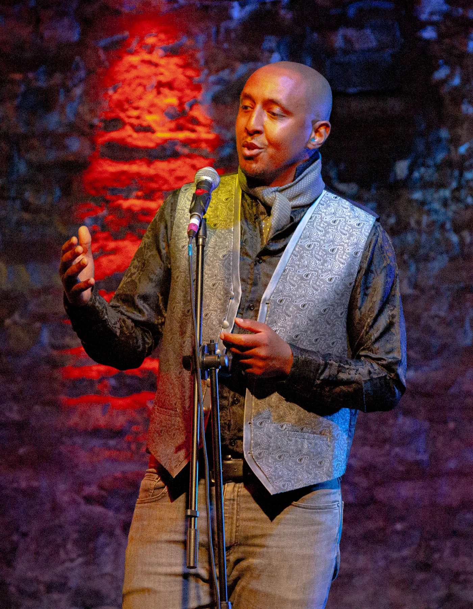

Samatar Elmi
For readings, music, events, partnerships, education, editorial work and general enquiries.
Performance, literary, education, editorial and media enquiries.
For readings, music, events, partnerships, education, editorial work and general enquiries.
Greyhound Literary. For rights, publishing and literary representation enquiries.
Creative process mentoring, private neurodiversity and NMH mentoring, manuscript editing and music executive production.
Use the approved copy and downloadable resources in the press kit.
I’m not on social media. You can contact me directly, read and subscribe to Dunya, or listen to and support my music on Bandcamp.
management@samatarelmi.co.uk
Read Dunya on this website
Subscribe on Substack
Knomad Spock on Bandcamp

This helps route your enquiry quickly and avoids unnecessary back-and-forth.
Why I’m not on social media
Participating in the world with deliberation and care.
I have deliberately stepped away from major commercial social-media platforms. This choice reflects serious ethical concerns regarding extractive platform economics, behavioral dependency and addiction, the material and political interests these corporations serve, and the compromises forced onto artistic work when it must submit to algorithmic distribution.
I believe creative work flourishes best through intentional, independent and mutually supportive communities. Staying connected through direct email, live performance, in-person workshops and the independent journal is an invitation to engage with more depth, attention and shared responsibility.
Read the full statement →